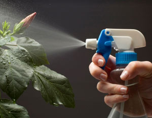

So you’ve planted your garden, watered carefully and weeded diligently. Everything’s going well, until one day you notice clouds of tiny whiteflies swirling around when you brush your tomato plants. Don’t panic - natural enemies will usually move in against the little buggers, especially if you’re growing lots of flowers around the garden to provide nectar and pollen to support the beneficial bugs. But if you want to give Mother Nature a helping hand, you can use an insecticidal soap spray.
Soap spray has no residual effect and only kills insects that are sprayed directly. That’s what makes this mild insecticide OK in organic gardens. Insecticidal soap will kill many types of soft-bodied insects and mites, including aphids, young scales, whiteflies, psyllids, mealybugs, spider mites, boxelder bugs and Japanese beetles.
Soap sprays do have limitations, though. The soap may be mildly toxic to some plants. To minimize damage to plants, entomologist Whitney Cranshaw from the Colorado State University extension office recommends waiting four to seven days between applications, diluting the spray with water even more than the spray instructions recommend, and spraying the same plant as few times as possible.
Make sure to buy insecticidal soap in a concentrate rather than as a “ready-to-use” product, as this will save you a lot of money in the long run. For example, you can buy a 32-ounce bottle of spray for between $5 and $10. A concentrate will cost you about twice as much, but will ultimately yield about six times more spray. If your tap water is hard, use softer rainwater or distilled water to make your soap spray. “In hard water, minerals such as calcium, magnesium, and iron combine chemically with the fatty acids in insecticidal soap. Not only does this reduce the soap’s insecticidal activity, it can also cause increased leaf injury,” says Rodale’s Chemical-Free Yard and Garden.
Homemade soap sprays can be a low-cost alternative to store-bought sprays, but making your own spray can increase the risk of damage to plants. Commercial soap sprays are generally better because they are designed specifically to control insects and minimize plant damage.
If you decide to make your own soap spray, be careful which kind of product you use. While some soaps are effective insecticides, other soaps can act as herbicides, disrupting plant cells and damaging your garden. A good practice to ensure plant safety is to do a test spray on a small portion of the plant, and wait a few days to see if the spray does any damage before spraying the rest of the plant.
Also, it’s important to be aware of the difference between soaps and detergents. Detergents are usually harsher on plants than soaps. A greenmethods.com article on insecticidal soaps says that, because detergents are made to dissolve grease, detergents are more likely to damage plant leaves than soaps are.
|
 ISTOCKPHOTO/DULEZIDAR Soap spray is safe to use in organic gardens because it has no residual effect and only kills insects that are sprayed directly. |
|
|